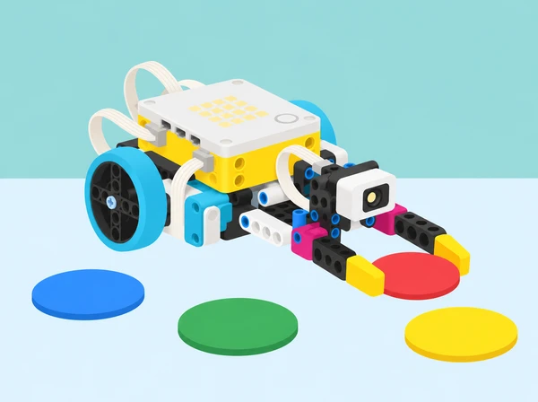

Funcions que fan equip
🏷️ Python: funcions i paràmetres
🌱 Situació, repte i intenció
La pregunta d’enginyeria és com separar un procediment llarg en accions amb nom, com repetir-lo amb dades diferents i com demostrar que la reutilització manté el comportament esperat.
La seqüència adapta les sis lliçons de la unitat 7 Functions de LEGO Education Introduction to Python Programming · Course 2. Progressa des de la descomposició d’una acció, passa per diverses funcions i funcions amb paràmetres, i arriba a un prototip ambiental investigat, provat i revisat amb feedback. La programació és Python textual: el pseudocodi ajuda a planificar, però no substitueix les funcions i crides de Python.
🎯 Aprenentatges i vocabulari
- Descompondre una tasca en subproblemes i donar noms clars a accions que es repetiran.
- Definir una funció amb
def, indentació i cos; explicar la diferència entre definir-la i cridar-la. - Crear i cridar diverses funcions en un ordre deliberat, evitant duplicar instruccions.
- Usar paràmetres com a noms d’entrada dins d’una funció i arguments com a valors concrets en la crida; anticipar errors de quantitat o ordre.
- Separar lectura del sensor, decisió de classificació i actuació mecànica perquè es puguen provar independentment.
- Provar casos coneguts i no assignats, registrar resultats, depurar una causa cada vegada i justificar redissenys.
- Comunicar límits del prototip: una lectura de color no és identificació material ni una recomanació real de reciclatge.
Funció: bloc de codi amb nom que es pot executar quan es crida. Paràmetre: nom declarat entre els parèntesis de la definició; rep una dada quan la funció és cridada. Argument: valor concret que passem en una crida. Descomposició: dividir una tasca complexa en parts que es poden entendre, construir i provar.
def mostrar_estat(etiqueta, color):
print(etiqueta, color)
mostrar_estat("Mostra A", "blau")En l’exemple, etiqueta i color són paràmetres; "Mostra A" i "blau" són arguments. És Python general vàlid per entendre la idea. Les ordres SPIKE de motors, sensors i runloop s’han de consultar en la Knowledge Base de la versió de l’app instal·lada: no s’ha de copiar aquest exemple com si fóra un programa de maquinari complet.
🧰 Materials i preparació
Un set SPIKE Prime per equip, hub carregat, dispositiu amb app SPIKE i editor Python disponible, sensor de color del set, un motor i peces Technic per a una pinça o porta de triatge senzilla, cartó per a canals i contenidors, fitxes grans de colors mats, cinta de paper, diari de disseny, cronòmetre extern opcional i ordinador/projector per mostrar fragments curts. El model pot ser fix sobre la taula: la base mòbil no és necessària per a la tasca.
Eviteu instruccions de construcció privades o copiar models de marca; cada equip dissenya una solució amb peces de la seua caixa.
Abans de classe, comproveu que l’editor Python detecta el hub, que el sensor i motor estan connectats als ports acordats i que es pot aturar l’execució. Les versions de l’app poden oferir API diferents. Prepareu quatre etiquetes de color provades amb la llum de l’aula, una etiqueta sense correspondència, una entrada manual alternativa per si el sensor falla i còpies desconnectades de crides correctes i incorrectes. Desactiveu motors abans de connectar o canviar cables.
Poseu el mecanisme a baixa velocitat, amb topalls de recorregut i dits lluny de la pinça.
Equips de 2–3 persones: programació/lectura del codi, cura del mecanisme i registre de proves. Feu rotació de rols a cada lliçó. La persona que observa té dret a demanar una pausa abans d’executar qualsevol canvi físic.
📅 Seqüència didàctica
Una tasca, moltes accions amb nom (45 min)
Fase 1 · Activem i prediem
Fase 2 · Explorem i construïm
Fase 3 · Expliquem i registrem
Repte (20 min): construir una xicoteta aleta/indicador articulat amb un motor SPIKE que faça un senyal d’inici, un senyal de “mostra preparada” i un retorn a la posició inicial. Descomponeu el comportament en preparar(), indicar() i tornar(); definiu-los amb def i crideu-los en l’ordre del pseudocodi. Consulteu la Knowledge Base per a ordres de motor compatibles. Proveu primer cada funció amb mecanisme desconnectat o sense càrrega, després amb un moviment curt i lent.
Fase 4 · Apliquem i millorem
Evidència i conversa (7 min): dibuixeu les crides com una línia temporal i expliqueu quina instrucció s’executa primer i per què el codi dins una definició no corre fins que la funció és cridada.
Fase 5 · Comprovem i reflexionem
Dues pinces, dues funcions de captura (45 min)
Fase 1 · Activem i prediem
Pregunta d’investigació: com pot el mateix programa controlar accessoris amb agafades diferents? Dissenyeu en esbós dues puntes intercanviables —una ampla i lleugera per a una fitxa gran i una més estreta per a una fitxa menuda— sense que cap peça puga caure de la taula. No cal fabricar ambdues si el temps o les peces no ho permeten: una pinça i una palanca de cartó poden representar la segona variant.
Fase 2 · Explorem i construïm
Descomposició (8 min): feu una seqüència com ara esperar ordre, tancar fins a límit segur, indicar captura i obrir. Marqueu quines accions són comunes i quines depenen de la forma de l’accessori.
Fase 3 · Expliquem i registrem
Fase 4 · Apliquem i millorem
Fase 5 · Comprovem i reflexionem
Reflexió: per què ajuda tindre funcions separades quan cada accessori necessita un moviment distint? En quins casos seria millor compartir una funció comuna i canviar només una dada?
Una funció, entrades diferents: paràmetres (45 min)
Fase 1 · Activem i prediem
Fase 2 · Explorem i construïm
Fase 3 · Expliquem i registrem
Estació SPIKE (20 min): el sensor llig una de quatre fitxes mat provades; el programa assigna una resposta de la maqueta (posició curta/mitjana/llarga del motor i missatge de consola). Separeu la funció que informa de les dades i la part que llig el sensor: una funció d’actuació rep arguments ja decidits per la regla. Per exemple, el programa pot cridar indicar(20, "paper") o indicar(45, "cartró"); traduïu les posicions a l’API disponible només després de consultar-la.
Incloeu un color sense assignació que no tanque la pinça i mostre “sense lectura”.
Fase 4 · Apliquem i millorem
Fase 5 · Comprovem i reflexionem
Una estació de triatge automàtica en maqueta (90 min)
Fase 1 · Activem i prediem
Repte i criteris (12 min): programar un prototip que reba una fitxa d’una en una i la porte al contenidor assignat pel codi de colors acordat per la classe. No es tracta d’identificar el material real. Fixeu criteris: no agafar fitxes no assignades; col·locar la fitxa dins una zona marcada; mantindre les peces senceres; respondre amb un indicador comprensible; permetre una aturada manual. Registreu les limitacions abans de construir.
Fase 2 · Explorem i construïm
Fase 3 · Expliquem i registrem
Pseudocodi (10 min): descriviu una volta: esperar activació; llegir color; seleccionar regla; cridar funció de triatge amb arguments; mostrar confirmació o “no reconegut”; esperar nova mostra.
Fase 4 · Apliquem i millorem
Fase 5 · Comprovem i reflexionem
Investigar una necessitat de l’entorn escolar (90 min)
Fase 1 · Activem i prediem
no convertiu una observació puntual en afirmació sobre tota l’escola.
Fase 2 · Explorem i construïm
Defineix i idea (15 min): formuleu una necessitat en una frase neutral, seleccioneu usuari i condicions d’ús, i redacteu dos criteris mesurables i dues restriccions (temps, peces, estabilitat o accessibilitat). Esbosseu individualment dues solucions abans de consensuar un prototip.
Fase 3 · Expliquem i registrem
Fase 4 · Apliquem i millorem
Pla de prova i revisió (20 min): prepareu casos normals, frontera/no assignat i repetició; deixeu un marge físic al voltant de l’accessori i una parada manual. Executeu-los, registreu predicció/resultat i canvieu un element per iteració.
Fase 5 · Comprovem i reflexionem
Idees per millorar i retorn entre equips (45 min)
Fase 1 · Activem i prediem
Fase 2 · Explorem i construïm
Fase 3 · Expliquem i registrem
Fase 4 · Apliquem i millorem
Redisseny (12 min): feu una única millora: aclarir un nom, reorganitzar crides, validar un argument, afegir resposta a entrada no assignada o fer més llegible l’indicador. Repetiu el cas que va motivar-la i un cas diferent per comprovar que no s’ha trencat una resposta existent.
Fase 5 · Comprovem i reflexionem
Autoavaluació (8 min): cada persona registra una contribució pròpia, una ajuda que ha rebut, una pràctica de codi que entén millor i una pregunta que queda oberta. Escala privada d’1–3 per a ús del temps i cura del material, amb un objectiu de millora, sense comparar alumnat.
🧪 Evidències i avaluació
El portafolis d’equip conté: definició de la necessitat i límits; dos esbossos i una decisió amb criteris; pseudocodi; mapa de funcions i crides; codi Python comentat; explicació de paràmetres i arguments amb un exemple propi; taula d’entrades esperades/no assignades i resultats; registre de depuració; proves repetides; feedback rebut i decisió de redisseny; i una targeta d’ús amb les limitacions del prototip.
El producte final és una maqueta de triatge de fitxes netes, una demostració de menys de dos minuts i una explicació oral o escrita que distingeix dada, regla i actuació.
Observeu quatre dimensions amb descriptors: estructura (identifica i crida funcions en un ordre coherent), paràmetres (diferencia definició, paràmetre i argument i comprova quantitat/ordre), validació (prova casos assignats i no assignats, registra evidència i explica un canvi), i comunicació/col·laboració (documenta el codi, respon al feedback i declara límits). En cada dimensió, useu nivells “encara necessita modelatge / ho fa amb suport / ho fa amb autonomia / ho transfereix i ho justifica”.
La valoració no depén només que el robot es moga: una funció ben provada i una limitació ben comunicada també són evidència d’aprenentatge.
♿ Participació, accessibilitat i seguretat
Permeteu pseudocodi oral, tauler de crides en paper, fragments Python amb tipografia ampliada o lectura compartida; els rols de disseny, registre, proves i programació tenen valor equivalent i roten. Les etiquetes s’identifiquen amb color i forma/textura o símbol triat per l’alumnat, sense dependre només de la visió del color. Useu peces grans, netes i lleugeres; manteniu la pinça a la taula, amb velocitat limitada, recorregut curt i aturada manual. No executeu canvis mentre hi ha mans prop del mecanisme.
No introduïu residus, menjar, líquids ni objectes punxants. Recolliu i reutilitzeu les fitxes. Eviteu dades personals, etiquetes amb noms, imatges d’alumnes i afirmacions sobre pràctiques ambientals del centre que no s’hagen comprovat.
🔗 Referents i adaptació
Adapta les sis lliçons de la unitat 7 Functions del curs LEGO Education Introduction to Python Programming · Course 2: Turtle Trouble, Clean Up with Multiple Functions, Clean Indicator, Automate the Clean Up, Taking Care of My Environment i Ideas to Help with My Environment.
Conserva la progressió de descomposició i funcions, diverses funcions per a mecanismes diferents, paràmetres i depuració de les crides, triatge amb dades, repte de disseny ambiental en context autèntic, documentació, proves i feedback. La tortuga i la neteja de residus es transformen en una necessitat de circulació de materials nets triada localment; les regles de colors són una simulació acordada per l’aula, i no es diu que el sensor reconega materials. S’han creat relat, activitats, evidències i il·lustració propis;
no es copien instruccions de construcció ni codi complet del fabricant. La guia oficial especifica lliçons de 45 minuts, amb activitats de 90 minuts per a l’automatització i el projecte ambiental, i una sessió final de feedback; aquesta proposta manté sis lliçons i distribueix la durada segons la disponibilitat del centre.